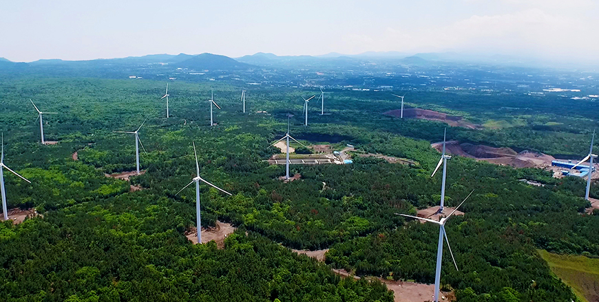

기획취재콘텐츠
- Home
- 제주라이프
- 기획취재콘텐츠
CFI 2030(Carbon Free Island 2030) 第三篇새로운 글


致力于能源自给自足以及清洁自然，发展新再生能源产业
四面环海，阳光和煦，海风时静时猛，海浪变幻无穷。这一切既是可以在济州道尽情感受的自然风光，这也是济州道丰富的新再生能源资源。济州道凭借丰富的自然资源，很早以前就开始研究、开发以及利用新再生能源。
济州道从1970年开始投入风力发电，历史长达50年之久。经过长期努力，构建了现如今的风力发电园区概念和原型。80年代开始，济州道投入太阳能发电。初期，风力和太阳能主要用于开发及研究，90年代后期济州道开始建立韩国首个商用风力发电园区，后来逐渐发展成为韩国风力发电中心。
- 济州岛日照充足，风能丰富，发掘和开发新再生能源历史较久。
图为装有风力发电机和太阳能板的加时里国产风力发电园区。
“济州能源公社环保照片征集展”获奖者林汉顺（音）作品，ⓒ济州能源公社提供 -
图为装有风力发电机和太阳能板的加时里国产风力发电园区。
“济州能源公社环保照片征集展”获奖者林汉顺（音）作品，ⓒ济州能源公社提供 -

- 东福里陆地风力发电园区全景 ⓒ济州能源公社提供 -
目前，济州已经建立以风力及太阳能发电为主的能源结构，其风力发电园区的能源供应量合计290MW（包括陆地及海洋），太阳能发电量为260MW左右，占能源供给的绝大部份比重。目前正在使用的其他能源包括家畜排泄物产生的沼气、废木料等废弃物、太阳能灯等，正在推进的其他待验证项目包括利用波浪动能发电等。济州充分利用环境资源，总体新再生能源供给率远高于全国平均水平8%，达到14.03%，成为韩国新再生能源供给率最高的地区（2019年数据）。
- 新昌风车海岸道路一侧建设有海上风力发电园区
“济州能源公社环保照片征集展”获奖者金泰浩（音）作品，ⓒ济州能源公社提供 -
“济州能源公社环保照片征集展”获奖者金泰浩（音）作品，ⓒ济州能源公社提供 -
济州道能够实现风能产业专业化，得益于扎实的制度基础。济州道通过《济州道特别法》将济州陆上及海上风力发电事业许可权限从产业通商资源部长官移交至济州道知事，制定了适合地区特点的额外许可标准以及选定地区相关条例和告示。选定地区是指预先调查并选定适合风力发电的用地及海岸村落，在公开征集候选地后，依据法律进行评定及审议等，推进风力发电园区项目建设。该制度最早确立于济州道，在全国范围内虽然有与其类似的计划选址制度，但受法律修订影响，实际应用效果欠佳。
实际上，风力发电项目规模大，难以快速推进。在公布规划及执行过程中，不仅需要大量资金及大面积用地，更需要考虑当地居民的接受意愿。济州能源公社主要负责风力发电事业，为提高居民接受意愿，积极开展了各项活动。按照以前的营业许可方式，从业者可在未与村落利害关系人协商的情况下直接申请营业许可，但这导致与村民间产生大量的矛盾。而选定地区条例一开始就以村落为对象，通过公开征集候选地获取支持，并与利害关系人进行协商及审议。也就是说，该制度能够最大限度地减少矛盾所导致的费用及时间成本。
2025新再生能源目标 (新普及目标 +761.9(MW), 新发电量 +1,663,778(MW))
| 구분 | 当前(MW) 2019 | 新普及目标(MW) | 新发电量(MW) |
|---|---|---|---|
| 太阳能 | 245 | 291.2 | 369,882 |
| 生物/废弃物发电 | 7.2 | 21.2 | 167,141 |
| 陆地风电 | 239 | 120 | 241,776 |
| 연료전지 | - | 1.5 | 9,855 |
| 海洋/小水电 | 0.5 | 3 | 21,024 |
| 海上风电 | 30 | 325 | 854,100 |

尽管新再生能源在数量及质量两方面不断发展，但其衍生产业及服务仍存在部分局限性。在衍生产业中，发电设备维修养护占据很大比重，与高附加值制造业及发电产业同轨并进的金融、经济、经营、法律服务等方面仍需制定制度以及培养人才等。但专家指出：“新再生能源市场的扩张性必然存在，想要发展衍生产业，技术问题固然需要解决，但中央政府的预算和法律制度层面的支持必不可少。”
永不停歇，向“无碳之岛”迈进
- 新昌风力发电园区
“济州能源公社环保照片征集展”获奖者李胜建（音）作品. ⓒ济州能源公社提供 -
“济州能源公社环保照片征集展”获奖者李胜建（音）作品. ⓒ济州能源公社提供 -
济州道积极发展电动汽车和新再生能源两大支柱产业，向“无碳之岛”目标逐步迈进。从以上产业的发展中可以看出，济州道在法律、制度、规划、执行、道民意识等各方面都领先全韩国。领跑者必然会面临无数难解之题，但他所走的路必然会成为后继者的里程碑。也许这就是能源转型领跑者——济州道的自豪、责任和义务！
다음글